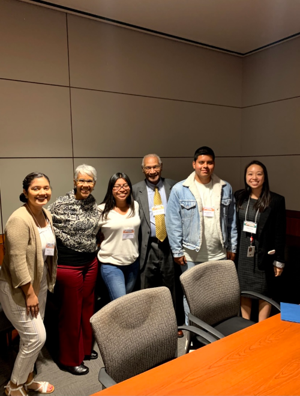
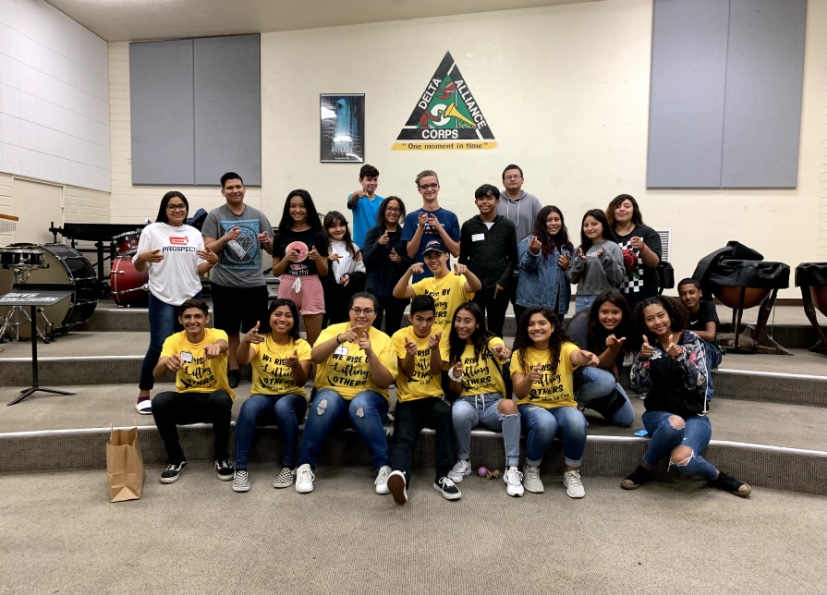
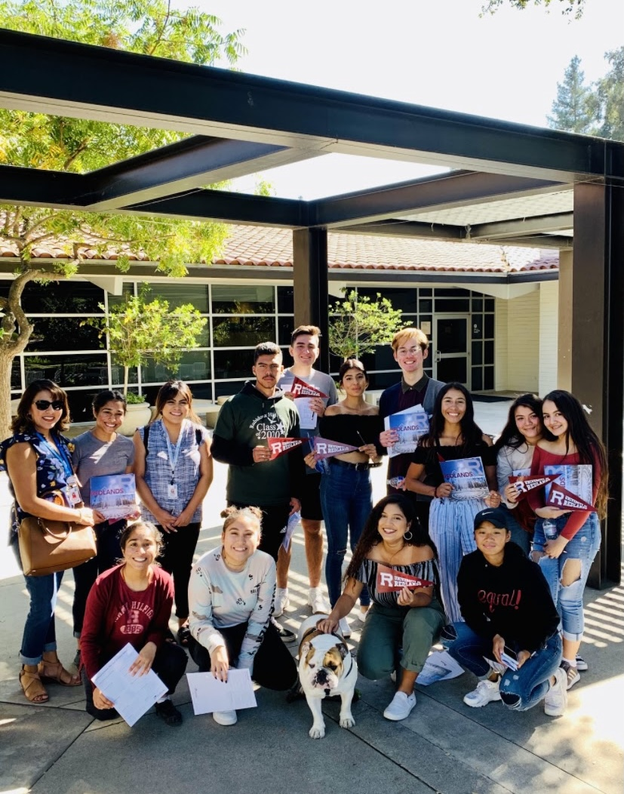
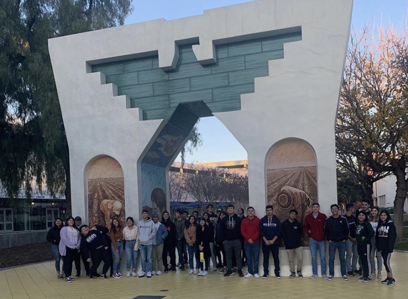
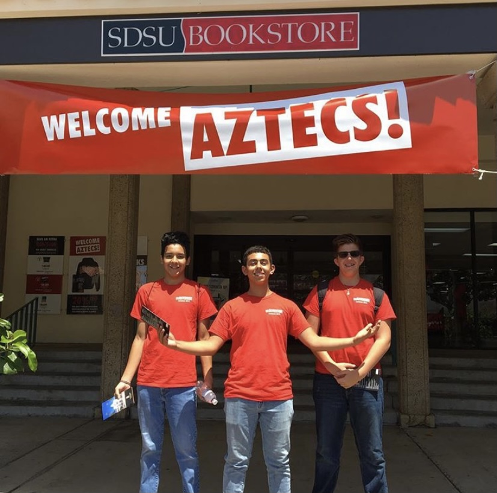
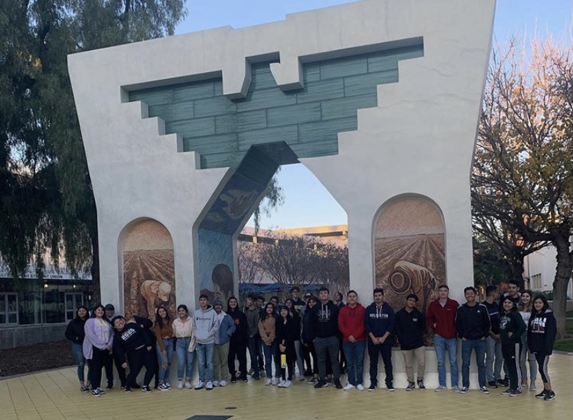
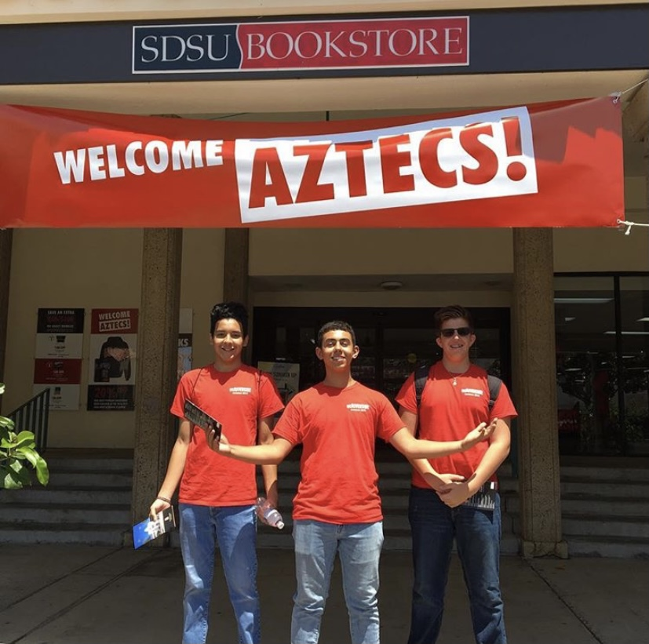

Samantha Villa
My name is Samantha Villa and I am currently a student at the University of California, Riverside. I am majoring in Finance in hopes to pursue a career in investing banking. My greatest work skills and attributes consist of me being productive, concise, patient, hardworking, and determined, among many others. I work well with others by incorporating everyone’s ideas and points of view. I also know how to work well under pressure and under strict deadlines. I am strong minded and not easy influenced. I also have amazing leadership skills. Leadership is a very important role where I have the opportunity to learn how to guide not only myself , but others to success by achieving common goals. Through leadership, I have had the experience to learn more about myself and I’ve had the privilege to grow as a leader by recognizing my own strengths and weaknesses. I believe that a good leader should be honest, compassionate, determined, and helpful. I strive to be a strong leader who portrays all of these qualities and many more.
Overall, I am eager to work diligently with others to produce great results. I love to help others financially in as many ways possible.
In addition to having a professional work life, I also have my personal life where I get to relax and enjoy doing my favorite hobbies. Some of my hobbies include, walking my dogs, going on bike rides, listening to music, and hiking. I currently have two dogs that are extremely active. They definitely know how to keep my busy. I have two male dogs one of them is a pitbull and the other is a mixed poodle. The pitbull is named Dodger after the Los Angeles Dodgers baseball team and he is 10 years old which makes him less playful and more sleepy. The poodle is named Gus because he was born in the month of August and Gus is short term for August. He is about 6 months old and is extremely playful and active.
Some of my goals for the future are to graduate from college because I want to become an investor in banking, but in order for me to accomplish that I need to go to school. Becoming an investor in banking has always been my dream because I enjoy helping others especially when it is financially. I love to guide people in various ways on how to invest their money and save their money wisely. I really enjoy the satisfaction I get when I have the chance to help those around me. It really inspires me to do more and more. So Once I become an investor in banking and get a stable job, I plan on traveling to different parts of the world to explore and enjoy other cultures. Traveling is another thing I love to do because I enjoy trying new things and seeing new things. I prefer traveling to tropical places because it seems much more relaxing to be surrounded by nature. Some tropical places I plan on traveling to are Bora Bora, Fiji, and the Bahamas.I enjoy traveling to more tropical places because it is much more relaxing for me. I hope that you enjoyed learning a little more about me today. Thank you for your time and attention and have a great day.
Experience
M.E.C.H.A.
• The purpose of this club is to celebrate Mexican heritage and culture.
• In this club, I help plan and manage fundraising events.
• For example, I help create and design mexican jewelry that we sell to raise money.
National Honor Society
• This organization requires students to obtain a GPA of 3.5 or higher for four consecutive semesters.
• 20 hours of volunteer service is required every year.
• Some examples of volunteer service we completed are tutoring hours at local elementary schools, community events, and food drives.
Upward Bound
• Upward Bound is a federally funded program
• Aimed to assist and support students in pursuing further education
• This program is affiliated with the University of California, Riverside to help obtain their goal.
• Upward Bound plans a variety of college trips, Saturday sessions, after school tutoring, etc. that are available for students to thrive academically and prepare themselves for further education.
Education
UC Riverside
University of California Riverside
University of California Riverside
Portfolio







